Réussir sa crème au beurre à la meringue Suisse :

Aujourd’hui je vais essayer de vous expliquer comment faire le glacage au beurre à la meringue suisse pour glacer vos cupcakes et vos gâteaux.
Pour moi le glaçage au beurre à la meringue Suisse est clairement le meilleur pour glacer les cupcakes! Le glaçage au beurre classique est à mon goût un peu trop écœurant alors que le glacage au beurre à la meringue Suisse (j’en connais certains qui le mangent carrément à la cuillère^^)
J’ai décidé de faire cet article car la toute première fois que j’ai voulu faire ce glaçage ce fut une vraie galère pour trouver « les » bonnes explications alors pour celles qui sont dans ce cas j’espère que mes explications vous conviendront!
Si vous n’utilisez pas de thermomètre n’abandonnez pas si votre glaçage ressemble à de gros grumeaux il suffit juste de continuer à battre un peu plus longtemps et il devient alors facile de le récupérer!! C’est vrai que ce glaçage et un peu plus difficile à réaliser qu’une simple crème au beurre mais ça en vaut vraiment la peine!
N’hésitez pas à me donner votre avis sur la recette ! Place maintenant à la recette du glaçage au beurre à la meringue Suisse.
Ingrédients
- Blancs d'oeufs - 4
- sucre - 130g
- beurre à temp ambiante - 230g
- sel - 1 pincée
Instructions
- Étape 1: Faire monter les blancs en neige avec le sucre au dessus d'une source de chaleur.
- Mettre le sucre, les blancs d’œufs et une pincée de sel dans un récipient résistant à la chaleur.
- Poser ce récipient sur un faitout contenant de l'eau bouillante (c'est le principe du bain marie) mais attention l'eau ne doit pas toucher le récipient contenant les œufs et le sucre.
- Au dessus du feu, fouetter sans vous arrêter. Le sucre va alors se dissoudre. Arrêter de fouetter une fois que le mélange est chaud (généralement au bout de 5 minutes). Si vous avez un thermomètre arrêter quand il indique 70°.
- Étape 2 : Hors du feu, faire refroidir la meringue et incorporer le beurre
- Verser la meringue dans le bol de votre robot. (Pas de panique pour celles qui n'en ont pas car au début je n'en avais pas non plus^^il suffit alors de verser la meringue dans un autre récipient)
- Pour celles qui n'ont pas de robot, battre la préparation à grande vitesse jusqu'à ce qu'elle retombe à température ambiante. Il faut bien compter 10min (c'est là où on est bien contente d'avoir un robot!!). La crème obtenue est alors brillante! Pour celles qui ont un robot changer le batteur par la feuille et incorporer, à vitesse moyenne, le beurre morceaux par morceaux. Une fois le beurre incorporé, augmenter la vitesse et continuer de fouetter pendant 2 minutes.
- Il est possible que certaines obtiennent une crème ressemblant à des grumeaux pas beaux (c'est ce qui arrive souvent quand la meringue et le beurre ne sont pas à la même température...) Dans ce cas, pas de stress!!! Fouetter plus longtemps et vous devriez pouvoir rattraper votre crème 🙂
- Si vous souhaitez ajouter du goût à la crème avec des arômes, extraits, sirops ou mettre des colorants c'est maintenant! 😉
- Étape 3 : Glacer vos cupcakes
- Il va falloir une poche à douille, une douille (ici la 1M de Wilton et c'est ma favorite) et les cupcakes bien refroidis!
- Mettre la douille dans la poche. Avant de mettre le glaçage faire une boucle pour éviter que le glaçage ne coule pendant que la poche se remplit.
- Pour plus de facilité, je place ma poche à douille dans un récipient (ici mon verre doseur) pour la remplir et comme ça j'ai mes deux mains de libres.
- Une fois la poche à douille remplit exercer une pression pour que la poche se remplisse uniformément jusqu'à la douille (la petite pliure que je fais au début se défait toute seule à ce moment là).
- Bien se placer au dessus des cupcakes. Si vous êtes droitière tenez la poche à douille avec votre main gauche et la droite au bout de la poche. C'est la main droite qui exercera alors des petites pressions pour faire descendre le glaçage (et inversement si vous êtes gauchère!)
- Et hop !
- A vous maintenant de laisser place à votre imagination pour la décoration!!
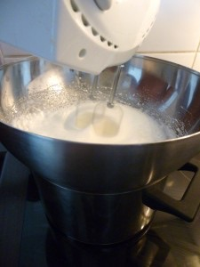
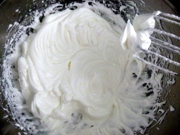
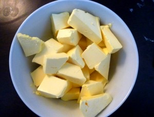
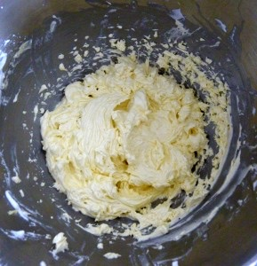
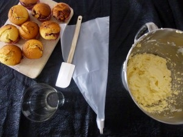
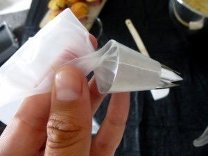
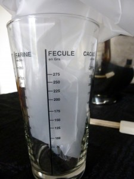
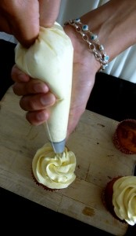
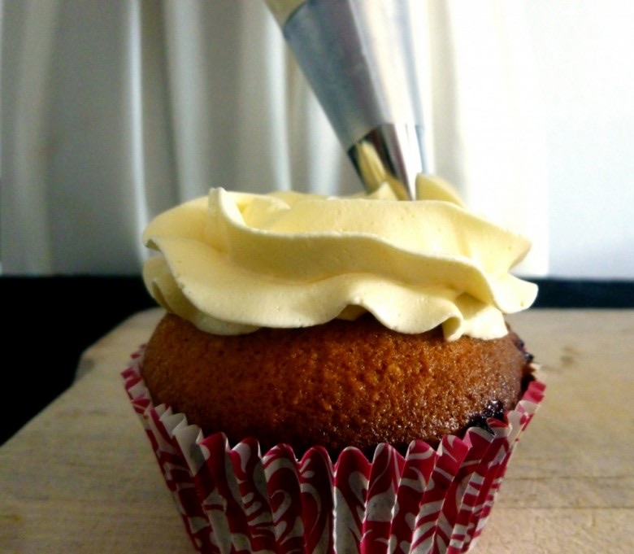
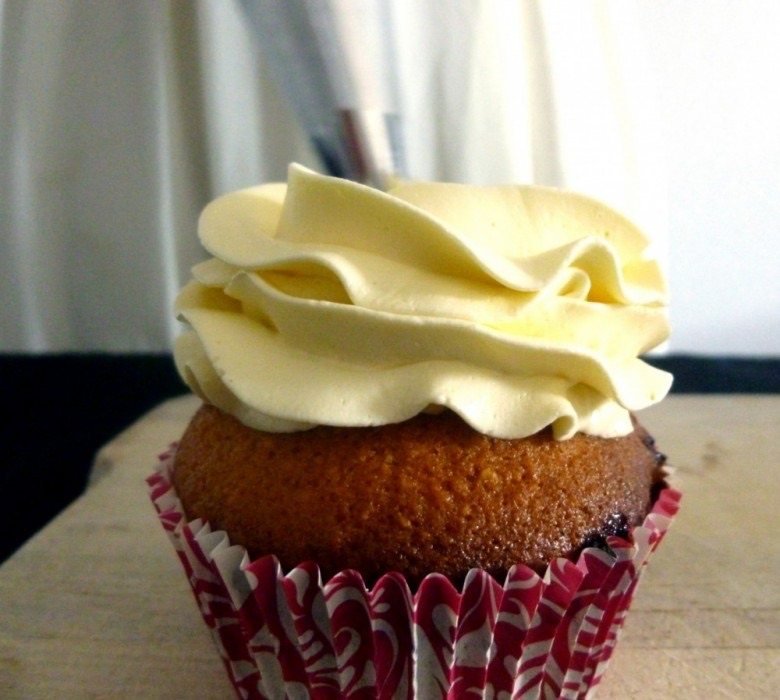
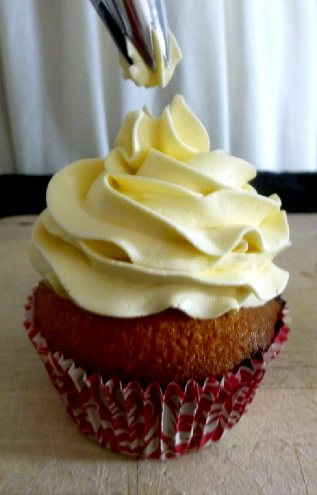
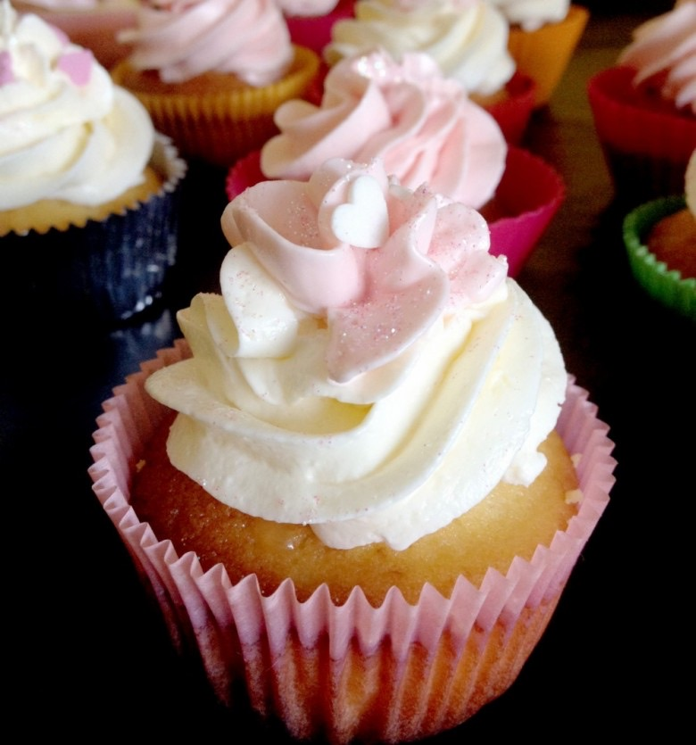
Les tips de la communauté
Glaçage excellent, léger et non écœurant - bien supérieur aux crèmes au beurre classiques. Recette très bien expliquée avec nombreuses astuces de dépannage. Les commentaires montrent une grande variété de réussites et d'ajustements possibles.
Astuces
- Utiliser un thermomètre pour une meilleure précision (58°C pour blancs, 118-119°C pour sirop)
- La palme du robot n'est pas obligatoire - un batteur électrique fonctionne aussi
- Le beurre doit être en pommade
- Peut être préparé la veille mais doit être remanié - sortir 30min avant utilisation
- Peut épaissir avec du beurre blanc ou vanille blanche pour un glaçage blanc pur
- Ajouter saveurs progressivement : vanille, sirop, arômes naturels, purée de fruit
- Les colorants liposolubles à privilégier pour colorer (pas hydrosolubles)
Variantes suggérées
- Parfumage avec extrait vanille, sirops, fleur d'oranger, cacao
- Aromatisation à la framboise ou autres fruits
- Coloration liposoluble pour teintes personnalisées
- Alternative crème chantilly/mascarpone (moins rigide mais plus légère)
Ajustements signalés
- Le bain-marie ne doit pas avoir le récipient qui touche l'eau
- Fouetter au-dessus de l'eau en ébullition, pas hors feu
- Quantités : pour 14 gros cupcakes ou à doubler/tripler selon gâteau